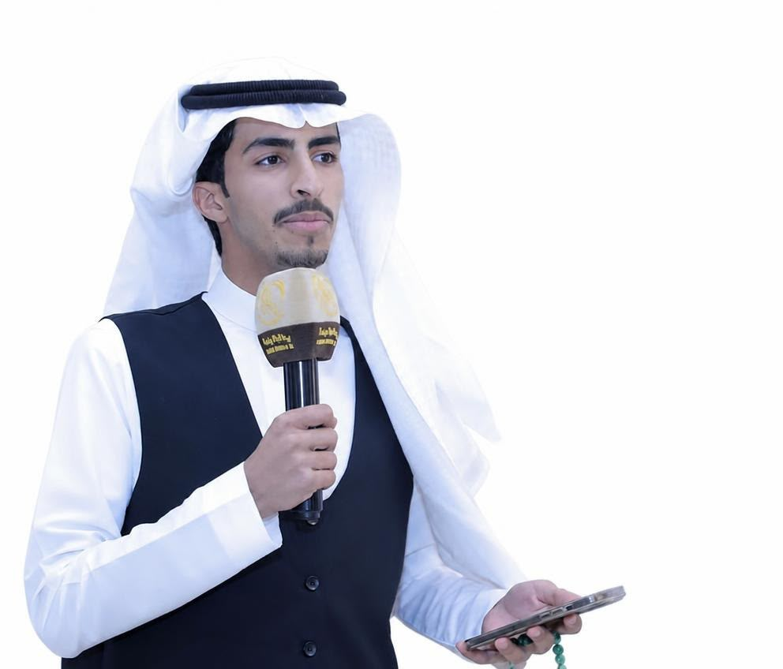

ϟ
الهندسة والطاقة
الأنظمة الكهربائية، مستقبل الطاقة، والتقنيات الداعمة للكفاءة والاستدامة.
أنا سلطان بن داخل الغيداني الحربي، طالب هندسة كهربائية في جامعة القصيم. أستكشف تقاطع الهندسة والطاقة والتقنية، وأطوّر مهاراتي في بناء المواقع الرقمية والعمل على أفكار ومشاريع ابتكارية.

أدرس الهندسة الكهربائية في جامعة القصيم، وأهتم بالطاقة والأنظمة التقنية والروبوتات والذكاء الاصطناعي. كما أشارك في الأنشطة الطلابية والفعاليات التقنية، وأعمل على تطوير مهاراتي في تصميم وبناء المواقع الإلكترونية.
أحب تحويل الأفكار الأولية إلى خطط قابلة للتجربة، وتعلّم أدوات جديدة تساعدني على تنفيذها خطوة بخطوة.
مساحات تجمع بين دراستي وفضولي التقني.
الأنظمة الكهربائية، مستقبل الطاقة، والتقنيات الداعمة للكفاءة والاستدامة.
أطوّر مهاراتي في HTML وCSS وJavaScript وأبني تجارب ويب متجاوبة.
استكشاف الأفكار العملية والأنظمة الذكية والنماذج الأولية.
تصميم المبادرات وتنظيم الفعاليات والربط بين التقنية والأثر المؤسسي.
أفكار قيد التطوير، مع توضيح مرحلتها الحالية بكل شفافية.
فكرة جهاز يعتمد على إيماءات اليد للتحكم في مؤشر الحاسوب أو العرض التقديمي، بهدف تسهيل التفاعل أثناء الشرح والعروض، مع استكشاف استخدامات مساعدة.
● مرحلة الفكرة والبحثبناء موقع شخصي متجاوب ثنائي اللغة لعرض النبذة والاهتمامات والمشاريع والمشاركة والشهادات، مع تطوير التصميم وتجربة المستخدم باستمرار.
● قيد التطويرتجارب أتعلم منها العمل الجماعي والتواصل وتنفيذ المبادرات.
المساهمة في تنظيم الفعاليات والأنشطة الطلابية والتعريف بالمجالات الهندسية والتقنية ضمن قسم البرامج والفعاليات.
حضور لقاءات ومعارض تقنية وطاقة، والتعرّف على الجهات المتخصصة والاتجاهات الحديثة في القطاع.
الاهتمام بالمشاركة في المجتمعات والأندية التقنية وتبادل المعرفة واستكشاف فرص التعلّم والتعاون.
قائمة أولية مبنية على المعلومات الظاهرة علنًا في ملف LinkedIn الذي عثرت عليه.
كلية الهندسة — جامعة القصيم
تدريبوزارة الموارد البشرية والتنمية الاجتماعية — السعودية
شهادةأكاديمية طويق
مشاركةهذه قائمة أولية وليست بالضرورة جميع شهاداتك. أرسل صور الشهادات أو لقطة لقسم التراخيص والشهادات من LinkedIn لإضافة البقية بدقة، مع الجهة والتاريخ وروابط التحقق إن وجدت.
مسارات تعلم حالية، وليست شهادات مكتملة.
أطوّر معارفي ومهاراتي من خلال الدورات على المنصة. ستُضاف أسماء الدورات عند تأكيدها أو إكمالها.
Coursera ↗أطوّر مهارات HTML وCSS وJavaScript عبر بناء موقعي الشخصي وتحسين تصميمه وتجاوبه وتجربة استخدامه.
استكشاف أدوات مثل Power BI والذكاء الاصطناعي لفهم البيانات وتوظيف التقنية في حل المشكلات.
يسعدني التواصل حول التقنية والهندسة والفعاليات الطلابية وفرص التعلّم والتعاون.